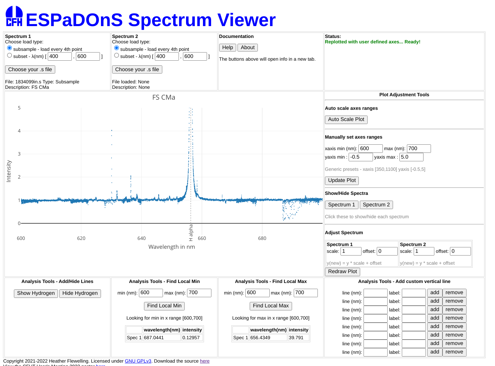

|
ESPaDOnS Spectrum Viewer
|
Welcome to the main page for the ESPaDOnS Spectrum Viewer!
This is a set of web tools for Mauna Kea Scholars) (and others) to allow users to view ESPaDOnS) spectra using a web browser. ESPaDOnS is a high-resolution echelle spectrograph and spectropolarimeter and is one of the instruments at Canada-France-Hawaii Telescope.
Espadons Spectrum Viewer
This is a tool that allows the user to load up to 2 ESPaDOnS spectrum .s files and to display and examine the spectrum. The code for this uses only html5, javascript and plotly, and when hosted on a server, can be accessed using just a browser. It works and has been tested on modern web browsers. This tool was designed for 2 purposes:
1. Allow high school students an easy way to view ESPaDOnS spectra using only a web browser.
2. Allow astronomers to quickly view their own spectra.
You can try out this tool, and find out more information, in the links below the screen shot.

ESPaDOnS Spectrum Viewer
ESPaDOnS Spectrum Viewer - User's Guide"
ESPaDOnS Spectrum Viewer - About
Copyright 2021-2022 Heather Flewelling. Licensed under GNU GPLv3. Download the source here
View the CFHT User's Meeting 2022 poster here